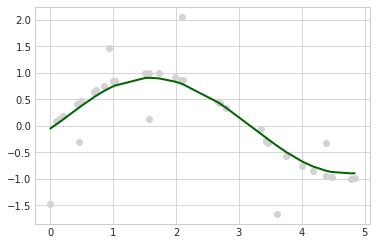

StackingRegressor: a simple stacking implementation for regression
An ensemble-learning meta-regressor for stacking regression
from mlxtend.regressor import StackingRegressor
Overview
Stacking regression is an ensemble learning technique to combine multiple regression models via a meta-regressor. The individual regression models are trained based on the complete training set; then, the meta-regressor is fitted based on the outputs -- meta-features -- of the individual regression models in the ensemble.

References
- Breiman, Leo. "Stacked regressions." Machine learning 24.1 (1996): 49-64.
Example 1 - Simple Stacked Regression
from mlxtend.regressor import StackingRegressor
from mlxtend.data import boston_housing_data
from sklearn.linear_model import LinearRegression
from sklearn.linear_model import Ridge
from sklearn.svm import SVR
import matplotlib.pyplot as plt
import numpy as np
import warnings
warnings.simplefilter('ignore')
# Generating a sample dataset
np.random.seed(1)
X = np.sort(5 * np.random.rand(40, 1), axis=0)
y = np.sin(X).ravel()
y[::5] += 3 * (0.5 - np.random.rand(8))
# Initializing models
lr = LinearRegression()
svr_lin = SVR(kernel='linear')
ridge = Ridge(random_state=1)
svr_rbf = SVR(kernel='rbf')
stregr = StackingRegressor(regressors=[svr_lin, lr, ridge],
meta_regressor=svr_rbf)
# Training the stacking classifier
stregr.fit(X, y)
stregr.predict(X)
# Evaluate and visualize the fit
print("Mean Squared Error: %.4f"
% np.mean((stregr.predict(X) - y) ** 2))
print('Variance Score: %.4f' % stregr.score(X, y))
with plt.style.context(('seaborn-whitegrid')):
plt.scatter(X, y, c='lightgray')
plt.plot(X, stregr.predict(X), c='darkgreen', lw=2)
plt.show()
Mean Squared Error: 0.1846
Variance Score: 0.7329

stregr
StackingRegressor(meta_regressor=SVR(),
regressors=[SVR(kernel='linear'), LinearRegression(),
Ridge(random_state=1)])
Example 2 - Stacked Regression and GridSearch
In this second example we demonstrate how StackingCVRegressor works in combination with GridSearchCV. The stack still allows tuning hyper parameters of the base and meta models!
For instance, we can use estimator.get_params().keys() to get a full list of tunable parameters.
from sklearn.model_selection import GridSearchCV
from sklearn.linear_model import Lasso
# Initializing models
lr = LinearRegression()
svr_lin = SVR(kernel='linear')
ridge = Ridge(random_state=1)
lasso = Lasso(random_state=1)
svr_rbf = SVR(kernel='rbf')
regressors = [svr_lin, lr, ridge, lasso]
stregr = StackingRegressor(regressors=regressors,
meta_regressor=svr_rbf)
params = {'lasso__alpha': [0.1, 1.0, 10.0],
'ridge__alpha': [0.1, 1.0, 10.0],
'svr__C': [0.1, 1.0, 10.0],
'meta_regressor__C': [0.1, 1.0, 10.0, 100.0],
'meta_regressor__gamma': [0.1, 1.0, 10.0]}
grid = GridSearchCV(estimator=stregr,
param_grid=params,
cv=5,
refit=True)
grid.fit(X, y)
print("Best: %f using %s" % (grid.best_score_, grid.best_params_))
Best: -0.082717 using {'lasso__alpha': 0.1, 'meta_regressor__C': 1.0, 'meta_regressor__gamma': 1.0, 'ridge__alpha': 0.1, 'svr__C': 10.0}
cv_keys = ('mean_test_score', 'std_test_score', 'params')
for r, _ in enumerate(grid.cv_results_['mean_test_score']):
print("%0.3f +/- %0.2f %r"
% (grid.cv_results_[cv_keys[0]][r],
grid.cv_results_[cv_keys[1]][r] / 2.0,
grid.cv_results_[cv_keys[2]][r]))
if r > 10:
break
print('...')
print('Best parameters: %s' % grid.best_params_)
print('Accuracy: %.2f' % grid.best_score_)
-9.810 +/- 6.86 {'lasso__alpha': 0.1, 'meta_regressor__C': 0.1, 'meta_regressor__gamma': 0.1, 'ridge__alpha': 0.1, 'svr__C': 0.1}
-9.591 +/- 6.67 {'lasso__alpha': 0.1, 'meta_regressor__C': 0.1, 'meta_regressor__gamma': 0.1, 'ridge__alpha': 0.1, 'svr__C': 1.0}
-9.591 +/- 6.67 {'lasso__alpha': 0.1, 'meta_regressor__C': 0.1, 'meta_regressor__gamma': 0.1, 'ridge__alpha': 0.1, 'svr__C': 10.0}
-9.819 +/- 6.87 {'lasso__alpha': 0.1, 'meta_regressor__C': 0.1, 'meta_regressor__gamma': 0.1, 'ridge__alpha': 1.0, 'svr__C': 0.1}
-9.600 +/- 6.68 {'lasso__alpha': 0.1, 'meta_regressor__C': 0.1, 'meta_regressor__gamma': 0.1, 'ridge__alpha': 1.0, 'svr__C': 1.0}
-9.600 +/- 6.68 {'lasso__alpha': 0.1, 'meta_regressor__C': 0.1, 'meta_regressor__gamma': 0.1, 'ridge__alpha': 1.0, 'svr__C': 10.0}
-9.878 +/- 6.91 {'lasso__alpha': 0.1, 'meta_regressor__C': 0.1, 'meta_regressor__gamma': 0.1, 'ridge__alpha': 10.0, 'svr__C': 0.1}
-9.665 +/- 6.71 {'lasso__alpha': 0.1, 'meta_regressor__C': 0.1, 'meta_regressor__gamma': 0.1, 'ridge__alpha': 10.0, 'svr__C': 1.0}
-9.665 +/- 6.71 {'lasso__alpha': 0.1, 'meta_regressor__C': 0.1, 'meta_regressor__gamma': 0.1, 'ridge__alpha': 10.0, 'svr__C': 10.0}
-4.839 +/- 3.98 {'lasso__alpha': 0.1, 'meta_regressor__C': 0.1, 'meta_regressor__gamma': 1.0, 'ridge__alpha': 0.1, 'svr__C': 0.1}
-3.986 +/- 3.16 {'lasso__alpha': 0.1, 'meta_regressor__C': 0.1, 'meta_regressor__gamma': 1.0, 'ridge__alpha': 0.1, 'svr__C': 1.0}
-3.986 +/- 3.16 {'lasso__alpha': 0.1, 'meta_regressor__C': 0.1, 'meta_regressor__gamma': 1.0, 'ridge__alpha': 0.1, 'svr__C': 10.0}
...
Best parameters: {'lasso__alpha': 0.1, 'meta_regressor__C': 1.0, 'meta_regressor__gamma': 1.0, 'ridge__alpha': 0.1, 'svr__C': 10.0}
Accuracy: -0.08
# Evaluate and visualize the fit
print("Mean Squared Error: %.4f"
% np.mean((grid.predict(X) - y) ** 2))
print('Variance Score: %.4f' % grid.score(X, y))
with plt.style.context(('seaborn-whitegrid')):
plt.scatter(X, y, c='lightgray')
plt.plot(X, grid.predict(X), c='darkgreen', lw=2)
plt.show()
Mean Squared Error: 0.1845
Variance Score: 0.7330

Note
The StackingCVRegressor also enables grid search over the regressors and even a single base regressor. When there are level-mixed hyperparameters, GridSearchCV will try to replace hyperparameters in a top-down order, i.e., regressors -> single base regressor -> regressor hyperparameter. For instance, given a hyperparameter grid such as
params = {'randomforestregressor__n_estimators': [1, 100],
'regressors': [(regr1, regr1, regr1), (regr2, regr3)]}
it will first use the instance settings of either (regr1, regr2, regr3) or (regr2, regr3) . Then it will replace the 'n_estimators' settings for a matching regressor based on 'randomforestregressor__n_estimators': [1, 100].
API
StackingRegressor(regressors, meta_regressor, verbose=0, use_features_in_secondary=False, store_train_meta_features=False, refit=True, multi_output=False)
A Stacking regressor for scikit-learn estimators for regression.
Parameters
-
regressors: array-like, shape = [n_regressors]A list of regressors. Invoking the
fitmethod on theStackingRegressorwill fit clones of those original regressors that will be stored in the class attributeself.regr_. -
meta_regressor: objectThe meta-regressor to be fitted on the ensemble of regressors
-
verbose: int, optional (default=0)Controls the verbosity of the building process. -
verbose=0(default): Prints nothing -verbose=1: Prints the number & name of the regressor being fitted -verbose=2: Prints info about the parameters of the regressor being fitted -verbose>2: Changesverboseparam of the underlying regressor to self.verbose - 2 -
use_features_in_secondary: bool (default: False)If True, the meta-regressor will be trained both on the predictions of the original regressors and the original dataset. If False, the meta-regressor will be trained only on the predictions of the original regressors.
-
store_train_meta_features: bool (default: False)If True, the meta-features computed from the training data used for fitting the meta-regressor stored in the
self.train_meta_features_array, which can be accessed after callingfit.
Attributes
-
regr_: list, shape=[n_regressors]Fitted regressors (clones of the original regressors)
-
meta_regr_: estimatorFitted meta-regressor (clone of the original meta-estimator)
-
coef_: array-like, shape = [n_features]Model coefficients of the fitted meta-estimator
-
intercept_: floatIntercept of the fitted meta-estimator
-
train_meta_features: numpy array,shape = [n_samples, len(self.regressors)] meta-features for training data, where n_samples is the number of samples in training data and len(self.regressors) is the number of regressors.
-
refit: bool (default: True)Clones the regressors for stacking regression if True (default) or else uses the original ones, which will be refitted on the dataset upon calling the
fitmethod. Setting refit=False is recommended if you are working with estimators that are supporting the scikit-learn fit/predict API interface but are not compatible to scikit-learn'sclonefunction.
Examples
For usage examples, please see http://rasbt.github.io/mlxtend/user_guide/regressor/StackingRegressor/
Methods
fit(X, y, sample_weight=None)
Learn weight coefficients from training data for each regressor.
Parameters
-
X: {array-like, sparse matrix}, shape = [n_samples, n_features]Training vectors, where n_samples is the number of samples and n_features is the number of features.
-
y: numpy array, shape = [n_samples] or [n_samples, n_targets]Target values. Multiple targets are supported only if self.multi_output is True.
-
sample_weight: array-like, shape = [n_samples], optionalSample weights passed as sample_weights to each regressor in the regressors list as well as the meta_regressor. Raises error if some regressor does not support sample_weight in the fit() method.
Returns
self: object
fit_transform(X, y=None, fit_params)
Fit to data, then transform it.
Fits transformer to `X` and `y` with optional parameters `fit_params`
and returns a transformed version of `X`.
Parameters
-
X: array-like of shape (n_samples, n_features)Input samples.
-
y: array-like of shape (n_samples,) or (n_samples, n_outputs), default=NoneTarget values (None for unsupervised transformations).
-
**fit_params: dictAdditional fit parameters.
Returns
-
X_new: ndarray array of shape (n_samples, n_features_new)Transformed array.
get_params(deep=True)
Return estimator parameter names for GridSearch support.
predict(X)
Predict target values for X.
Parameters
-
X: {array-like, sparse matrix}, shape = [n_samples, n_features]Training vectors, where n_samples is the number of samples and n_features is the number of features.
Returns
-
y_target: array-like, shape = [n_samples] or [n_samples, n_targets]Predicted target values.
predict_meta_features(X)
Get meta-features of test-data.
Parameters
-
X: numpy array, shape = [n_samples, n_features]Test vectors, where n_samples is the number of samples and n_features is the number of features.
Returns
-
meta-features: numpy array, shape = [n_samples, len(self.regressors)]meta-features for test data, where n_samples is the number of samples in test data and len(self.regressors) is the number of regressors. If self.multi_output is True, then the number of columns is len(self.regressors) * n_targets
score(X, y, sample_weight=None)
Return the coefficient of determination :math:R^2 of the
prediction.
The coefficient :math:`R^2` is defined as :math:`(1 - \frac{u}{v})`,
where :math:`u` is the residual sum of squares ``((y_true - y_pred)
2).sum()and :math:`v` is the total sum of squares((y_true -
y_true.mean()) 2).sum()``. The best possible score is 1.0 and it
can be negative (because the model can be arbitrarily worse). A
constant model that always predicts the expected value of y,
disregarding the input features, would get a :math:R^2 score of
0.0.
Parameters
-
X: array-like of shape (n_samples, n_features)Test samples. For some estimators this may be a precomputed kernel matrix or a list of generic objects instead with shape
(n_samples, n_samples_fitted), wheren_samples_fittedis the number of samples used in the fitting for the estimator. -
y: array-like of shape (n_samples,) or (n_samples, n_outputs)True values for
X. -
sample_weight: array-like of shape (n_samples,), default=NoneSample weights.
Returns
-
score: float:math:
R^2ofself.predict(X)wrt.y.
Notes
The :math:R^2 score used when calling score on a regressor uses
multioutput='uniform_average' from version 0.23 to keep consistent
with default value of :func:~sklearn.metrics.r2_score.
This influences the score method of all the multioutput
regressors (except for
:class:~sklearn.multioutput.MultiOutputRegressor).
set_params(params)
Set the parameters of this estimator.
Valid parameter keys can be listed with ``get_params()``.
Returns
self
Properties
coef_
None
intercept_
None
named_regressors
None
ython